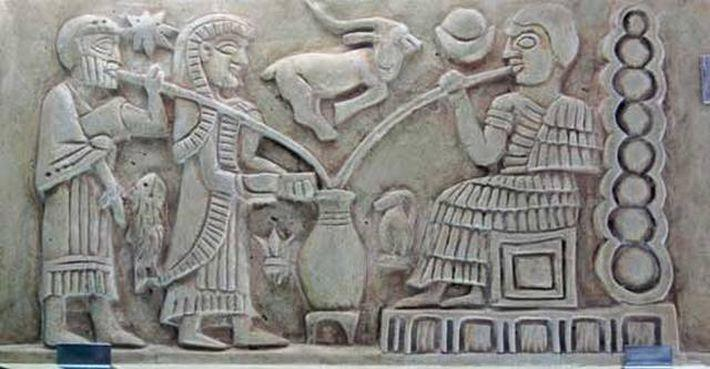
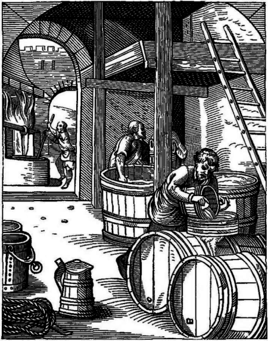
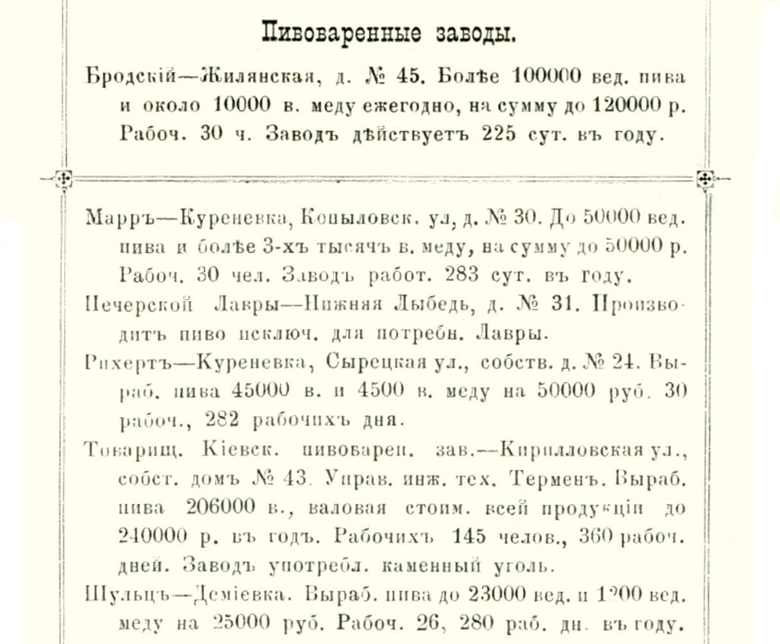

КОРОТКА ІСТОРІЯ ПИВА
Пиво один з тих самих універсальних напоїв, що його з давніх часів знали різні народи. Індуси варили пиво з сорго, китайці з рису, індіанці з кукурудзи. Мессопотамці додавали в пиво різні трави для гірчинки, єгиптяни шафран, аніс та мандрагору щоб не просто смакувати, а й спілкуватися з богами.
Пиво, яке варили в ті сиві часи, нагадувало не сучасне пиво, а швидше брагу. До відкриття дріжджів Луї Пастером лишались цілі сторіччя, фільтрування ще не стало світовим трендом, тому чарівний густий і темний напій в Месопотамії, наприклад, вживали через трубочку, щоб уникнути твердих часточок.

З Вавилону рецепт пива з полби та ячменю, подолавши Кавказ, прийшов до Європи. Скіфи варили пиво з ячменю, проса, вівса та подрібненого рису. Германці, як і вавилоняни, додавали для гірчинки різні трави: полин, вересовий цвіт, ягоди плюща та лавра, молоді вербові пагони.
Старовинне пиво було б правдивіше називати брагою, щоб відрізнити густу й темну рідину від того прозорого світлого пива, яке почали варити багато сторіч потому, додаючи хміль. У Київській Русі з пива та меду готували міцний перевар, а саме пиво називали солодом. Зі зростанням популярності пива його стали варити не лише міщани, а й священики. Здається, тоді ж замість експериментальних сумішей трав, які нерідко викликали галюцинації та полювання на відьом, стали додавати хміль приємно гіркий, п'янкий і безпечний. Він надав пиву прозору й легку консистенцію та приємну гірчинку.
З розповсюдженням християнства пиво завоювало північні регіони там, де погано ріс виноград, вино на літургіях офіційно замінювали пивом. Ахенський собор навіть видав спеціальну таблицю відповідностей, де норма вина для священиків співвідносилась із нормами пива. Одна з найдавніших броварень України знаходиться в селі Микулинці на Тернопільщині. З XV сторіччя і донині тут варять пиво як варили за Речі Посполитої, Польщі, Австро-Угорської імперії та Радянського Союзу.
У XVI сторіччі споживання пива досягало неймовірно високо рівня, наприклад, у Швеції його пили в 40 разів більше, ніж зараз. Одні дослідники пояснюють це "океанською" спрагою бо тодішні люди вживали багато засолених продуктів: м'ясо, рибу, сири тощо. Інші вважають, що поживний напій додавав калорій у не надто різноманітний раціон. Пивний суп з хлібом та копченостями - традиційна страва тих часів.

У XVII сторіччі пиво та вино потіснились міцним алкоголем, а потім і новими "збуджуючими" напоями, як-от чай, кава та шоколад. Об'єми споживання пива помітно скоротились, але все-рівно лишались вражаючими.
У 1712 році перша велика броварня відкрилась у Львові (тоді ще територія Речі Посполитої). Петро І в пошуках концептуальних новинок для своєї імперії прихопив з Європи рецепти пива на хмелю. У 1742 році пиво, вино та горілку продавали біля Золотих, Печерських та Львівських воріт, у шинках та багатьох інших місцях.
ХІХ сторіччя подарувало світові відкриття дріжджових грибів Луї Пастером та, врешті, пивних дріжджів Луї Крістіаном Хансеном. Завдяки цьому з'явилась технологія низового бродіння, за якою нині у світі варять мільйони літрів пива.
Пам'ятна книга Київської губернії за 1857 рік згадує про три київські виноробні, а у 1874 їх нараховувалося вже шість. Наприкінці ХІХ сторіччя у Київській губернії активно працювало три десятки пивних заводів.

З розпадом СРСР до України прийшла ціла хвиля великих корпорацій, витримати конкуренцію з якими місцевому бізнесу не завжди вдавалось. Виграли бренди, які зробили ставку на патріотизм. Так Оболонь та Чернігівське стали незмінними спонсорами футбольних чемпіонатів.
Початок нульових ознаменував появу численних локальних броварень, а буквально за ними підтягнулась тенденція крафтового пивоваріння.